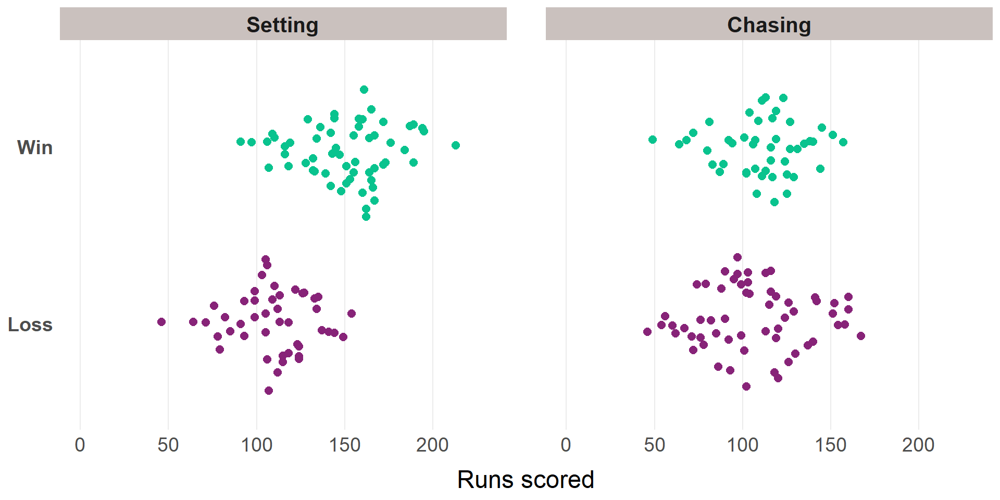
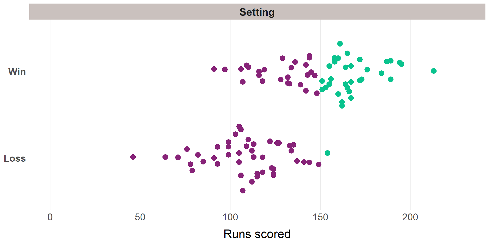
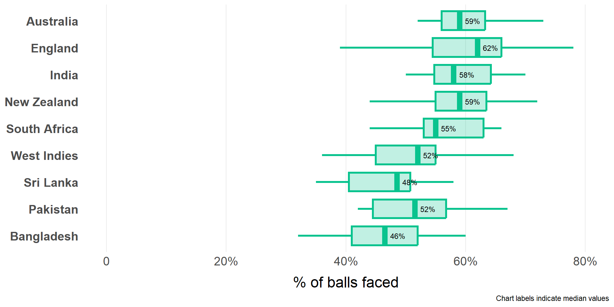

What It Takes To Win
Cricket - Women’s T20
Jacquie Tran | 8 Dec 2024
Introduction
- Cricket will be added to the Olympic program for LA 2028. The format is expected to be T20.
- The Australian Women’s cricket team has long been among the most successful international sides in world cricket.
- With the professionalisation of women’s cricket growing globally, more nations are challenging the Australian Women’s team in major events (see: T20 World Cup 2024, won by New Zealand)
Key rules of T20 cricket
Two teams of 11 players each. Teams take turns to bat and bowl. In the T20 format, teams will complete one innings of each mode.
A standard innings is made up of 20 overs, with each over consisting of 6 regulation balls bowled, i.e., 120 regulation balls in total. (Non-regulation balls are called “extras” and concede runs when bowled.)
An innings ends when all regulation balls have been bowled, or when the batting side has lost all 10 wickets (batting must be done in partnerships).
A match result is achieved when:
- The team that bats 1st sets a target that the team batting 2nd does not chase down before the end of their innings, or
- The team that bats 2nd successfully chases the target set by the team that batted 1st, with at least 1 wicket still in hand.
Open environment features:
- Cricket ovals are non-standard in dimensions
- The behaviour of pitches and outfields will differ due to the local climate, weather conditions, time of day, and ground curation practices
Bottom Line Up Front
What does winning look like? (outcome measures)
Successful teams
- Australia have been the strongest team in T20 tournaments across the last 6 years, winning 89% of their matches in tournament play
- However, India, England, New Zealand, and South Africa have also achieved some success and are the main contenders that are challenging Australia’s run of dominance
Bowling
Teams have typically won the game when they have taken 2 wickets in the Powerplay, 3 in the Consolidation phase, and 3 in the “Death” overs of their bowling innings.
Batting
Teams that bat first and set a target of 150+ generally go on to win the game.
Note: The figures above reflect past performances and are not “hard and fast” targets. It remains important to assess match-day weather and pitch conditions and adjust expectations accordingly.
Bottom Line Up Front
What performance indicators are related to winning?
Batting
Teams that are more successful in tournament play:
- Score a greater percentage of their runs from boundaries (Australia / England / India: 50-53%)
- Score from 2 of every 3 balls faced (excluding runs from extras).
Bowling
- There is a general trend that higher-ranked teams are faster to take top order wickets than lower-ranked teams.
- Australia is the only team that consistently takes 3 wickets within 8 overs or less.
- Sides that bowl well frequently bowl dot balls throughout an innings.
- Australia, England, and South Africa excel in this area, with dot balls comprising ~44% of balls bowled in an innings.
Methods
Caveat: Only a slice of “What It Takes To Win”
This quantitative analysis uses publicly available game data only.
Other factors are critical to performance, beyond game data and beyond what is publicly available.
Building an in-depth understanding of “What It Takes To Win” in any sport would require a more comprehensive and multi-faceted approach, which is beyond the scope of this presentation.
Overview of analytical approach

Note: The 3rd part of the game, fielding, has not been included in this analysis, due to limited fielding-specific measures available.
Data source and preparation
Ball-by-ball data from international women’s T20 tournaments from 2018 to 2024 1:
- Women’s T20 World Cup tournaments held in 2018, 2020, 2023, and 2024
- The Birmingham 2022 Commonwealth Games
Data obtained from Cricsheet.org using the {cricketdata} R package:
- 104 matches with a result (1 match excluded from analysis of performance indicators due to ending with no result - rained out)
- 13 teams across the 5 tournaments in the data set
Game outcomes
Ranking teams on match outcomes
Ranked by tournament wins, then win percentage, then losses (ascending)
| # of tournaments | Wins | Losses | No result | Total matches | Win % | |
|---|---|---|---|---|---|---|
| Australia üèÜüèÜüèÜü•á | 5 | 25 | 3 | 0 | 28 | 89.3 |
| England üèÅ | 5 | 16 | 7 | 0 | 23 | 69.6 |
| India üèÅü•à | 5 | 16 | 8 | 0 | 24 | 66.7 |
| New Zealand üèÜü•â | 5 | 14 | 9 | 0 | 23 | 60.9 |
| South Africa üèÅüèÅ | 5 | 13 | 10 | 0 | 23 | 56.5 |
| West Indies | 4 | 10 | 7 | 0 | 17 | 58.8 |
| Sri Lanka | 5 | 4 | 14 | 0 | 18 | 22.2 |
| Pakistan | 5 | 4 | 14 | 1 | 19 | 21.1 |
| Barbados | 1 | 1 | 2 | 0 | 3 | 33.3 |
| Bangladesh | 4 | 1 | 15 | 0 | 16 | 6.2 |
| Thailand | 1 | 0 | 3 | 1 | 4 | 0.0 |
| Scotland | 1 | 0 | 4 | 0 | 4 | 0.0 |
| Ireland | 2 | 0 | 8 | 0 | 8 | 0.0 |
Wickets in phases of an innings
Total runs scored in an innings

- Wide variability in totals when setting, but ~150 runs seems important.
- No discernible difference in chasing totals between winning and losing teams (To be expected - because the winning target is set by the team that bats first)
Setting a total above / below 150
The team batting first has won:
- 97% of matches when setting a target of 150 or above
- 37% of matches when setting a target below 150
Performance indicators: Batting and bowling
“Batting performance characteristics appear to be more important than bowling characteristics, which is even more pronounced in women’s T20 cricket.” (Bhardwaj & Dwyer, 2022)
Comparing teams on selected performance indicators
For this part of the analysis:
- We use team rankings that were generated earlier
- Focusing on teams that competed in 3+ tournaments from 2018 to 2024, for fairer comparisons between teams of varying tournament history.
| # of tournaments | Wins | Total matches | Win % | |
|---|---|---|---|---|
| Australia üèÜüèÜüèÜü•á | 5 | 25 | 28 | 89.3 |
| England üèÅ | 5 | 16 | 23 | 69.6 |
| India üèÅü•à | 5 | 16 | 24 | 66.7 |
| New Zealand üèÜü•â | 5 | 14 | 23 | 60.9 |
| South Africa üèÅüèÅ | 5 | 13 | 23 | 56.5 |
| West Indies | 4 | 10 | 17 | 58.8 |
| Sri Lanka | 5 | 4 | 18 | 22.2 |
| Pakistan | 5 | 4 | 19 | 21.1 |
| Bangladesh | 4 | 1 | 16 | 6.2 |
Scoring power
To score 150+ requires scoring faster than “a run a ball”.
Boundaries are highest value scoring options in cricket, worth 4 or 6 runs from one ball faced 1.
Hypotheses:
Higher-ranked teams are efficient scorers: They score a higher percentage of runs from boundaries than lower-ranked teams.
Higher-ranked teams are better at “turning over the strike” - they accumulate runs more consistently throughout a batting innings by scoring off a greater percentage of balls faced.
Runs scored from boundaries
Note: Cricsheet data does not flag boundary-scoring balls, as such. For this analysis, I am working under the assumption that “runs off bat” of 4 or 6 are boundaries. 1
Building scoreboard pressure
The more successful teams are capable of consistently scoring off 2 of every 3 balls faced (excluding runs from extras).
Implications for bowling?
Bowling performance
“Tempo”
Concept from chess - creating pressure by staying one turn ahead of your opponent
In cricket, bowling teams can build pressure by controlling and challenging 2 finite resources:
- Balls to be bowled (maximum 120 regulation balls)
- Wickets in hand (maximum 10)
Hypotheses:
Higher-ranked teams take top order wickets faster than lower-ranked teams (per Bhardwaj & Dwyer, 2022), thereby minimising the threat of the opposing team’s best batters.
Higher-ranked teams bowl more “dot balls” than lower-ranked teams, especially in earlier phases of their bowling innings.
Taking top order wickets
Australia is notably dominant in this metric - the only team that typically takes 3 wickets within 8 overs or less.
Dot ball frequency
There is less variation between teams of different rankings in terms of dot ball frequency.
The stronger sides in this metric are Australia, England, and South Africa, with dot balls comprising nearly half of balls bowled.
Limitations and considerations
Limited availability and range of metrics about fielding performance.
Fielding metrics that would be informative but are not routinely captured or difficult to define:
- Dropped catches
- Boundaries conceded
- Runs saved
Limited availability of Hawkeye data from women’s matches - restricts the level of granularity that can be achieved in analysing technical performance
Ways to extend the analysis
Campaign insights
Team composition / selection
Collaborate with athletes, coaches, and performance staff to identify key performance features and related metrics
Draw on a wider body of research literature, where available
Deeper analysis of opposition teams and individual player performances
Assess relevance of performance in professional T20 leagues to T20 internationals